<!doctype html>
<html lang="en">
<head>
  <meta charset="utf-8">
  <meta name="viewport" content="width=device-width, initial-scale=1">
  <title>arxiv digest — 2026-05-12</title>
  <style>
:root {
  --bg: #ffffff;
  --fg: #1f2328;
  --muted: #59636e;
  --border: #d0d7de;
  --card: #f6f8fa;
  --link: #0969da;
}
body {
  max-width: 980px;
  margin: 0 auto;
  padding: 2rem 1rem 5rem;
  font-family: -apple-system, BlinkMacSystemFont, "Segoe UI", Helvetica, Arial, sans-serif;
  line-height: 1.55;
  color: var(--fg);
  background: var(--bg);
}
a { color: var(--link); }
img { max-width: 100%; height: auto; }
pre, code { background: var(--card); border-radius: 6px; }
pre { padding: 1rem; overflow-x: auto; }
blockquote { border-left: 4px solid var(--border); padding-left: 1rem; color: var(--muted); }
details { margin: 0.6rem 0; }
summary { cursor: pointer; font-weight: 600; }
.paper-figures-scroll {
  display: flex;
  gap: 1rem;
  overflow-x: auto;
  overscroll-behavior-x: contain;
  padding: 0.75rem 0.25rem 1rem;
  margin: 1rem 0 1.25rem;
  border-top: 1px solid var(--border);
  border-bottom: 1px solid var(--border);
  scroll-snap-type: x proximity;
}
.paper-figure-card {
  flex: 0 0 min(260px, 72vw);
  scroll-snap-align: start;
  background: var(--card);
  border: 1px solid var(--border);
  border-radius: 12px;
  padding: 0.55rem;
}
.paper-figure-card img {
  display: block;
  width: 100%;
  max-height: 240px;
  object-fit: contain;
  background: white;
  border-radius: 8px;
}
.paper-figure-caption {
  display: block;
  margin-top: 0.5rem;
  color: var(--muted);
  font-size: 0.85rem;
}
.figure-strip-hint {
  color: var(--muted);
  font-size: 0.9rem;
  margin-bottom: -0.3rem;
}
</style>
  <!-- MathJax: renders $...$ inline math and $$...$$ display math, plus
       \(...\) and \[...\]. Loaded from the official CDN; works offline
       once cached. Configured to skip code/pre blocks so arxiv IDs that
       look like dollar amounts don't get mangled. -->
  <script>
    window.MathJax = {
      tex: {
        inlineMath: [['$', '$'], ['\\(', '\\)']],
        displayMath: [['$$', '$$'], ['\\[', '\\]']],
        processEscapes: true,
        processEnvironments: true
      },
      options: {
        skipHtmlTags: ['script', 'noscript', 'style', 'textarea', 'pre', 'code'],
        ignoreHtmlClass: 'tex2jax_ignore',
        processHtmlClass: 'tex2jax_process'
      }
    };
  </script>
  <script id="MathJax-script" async
    src="https://cdn.jsdelivr.net/npm/mathjax@3/es5/tex-chtml.js"></script>
</head>
<body>
<header style="background-color: #333; color: white; padding: 15px; margin-bottom: 20px;">
  <h1 style="margin: 0; font-size: 24px;">
    <a href="https://ochelpan.github.io/arXiv_clean/" style="color: white; text-decoration: none;">Main</a>
  </h1>
</header>

<h1>Daily arXiv Report</h1>

<hr>
<p>
<a href="index.html">← Index</a>
 · <a href="papers_05.html">← Previous</a> · <a href="papers_07.html">Next →</a>
</p>
<hr>

<h2>Papers 101–120</h2>
<p><a id="paper-2605.10424"></a></p>
<h3 id="quantum-correlations-of-neutrinos-in-the-kerr-newman-space-time"><a href="http://arxiv.org/abs/2605.10424v1">Quantum Correlations of Neutrinos in the Kerr-Newman Space-time</a></h3>
<p><strong>Authors:</strong> Ze-Wen Li, Shu-Jun Rong<br>
<strong>Type:</strong> theory · <strong>Category:</strong> quantum information and computing · <strong>PDF:</strong> <a href="https://arxiv.org/pdf/2605.10424v1">https://arxiv.org/pdf/2605.10424v1</a><br>
<strong>Analysis basis:</strong> abstract only; PDF text extraction failed or PDF unavailable
<strong>Topic relevance:</strong> <code>entanglement &amp; information structure</code> <strong>2/5</strong></p>
<p><strong>Summary.</strong> This paper explores how the gravitational properties of a rotating, charged black hole (Kerr-Newman metric) affect the quantum correlations of neutrinos. It demonstrates that parameters like mass, charge, and angular momentum can modulate neutrino oscillation patterns and entanglement, supporting the potential use of neutrinos as resources for quantum information.</p>
<p><strong>Why it may be interesting.</strong> not directly relevant</p>
<details>
<summary>Detailed structure</summary>
<p><strong>Main problem.</strong> Investigating how the Kerr-Newman metric parameters (mass, angular momentum, and charge) influence the quantum correlations and oscillation probabilities of neutrinos.</p>
<p><strong>Main result.</strong> The study finds that the Kerr-Newman metric significantly alters neutrino oscillation probabilities and quantum correlations compared to the Schwarzschild metric, with specific metric parameters modulating the oscillation periods and entanglement levels.</p>
<p><strong>Method.</strong> Theoretical analysis of neutrino propagation (both radial and non-radial) using the weak-field approximation within the Kerr-Newman spacetime framework.</p>
<p><strong>Model / system.</strong> Neutrinos propagating through a Kerr-Newman spacetime, characterized by mass M, angular momentum per unit mass a, and charge Q.</p>
<p><strong>Key observables.</strong> Neutrino survival probability (Pee), entanglement, nonlocality, and coherence.</p>
<p><strong>Important parameters / regimes.</strong> Mass (M), angular momentum per unit mass (a), and charge (Q) of the Kerr-Newman metric.</p>
<p><strong>Assumptions / limitations.</strong> Weak-field approximation; consideration of both radial and non-radial propagation.</p>
<p><strong>Paper structure.</strong> The paper investigates the impact of metric parameters on quantum correlations, compares inward and outward propagation, analyzes radial vs. non-radial cases, and concludes with the implications for neutrino-based quantum information resources.</p>
</details>
<details>
<summary>Abstract</summary>
<p>Thanks to feeble interactions, neutrinos show special advantages in the field of quantum information (QM). The properties of quantum correlations (QCs) are fundamental for neutrino-based QM. In this paper, we investigate the influence of the Kerr--Newman metric on QCs by varying the metric parameters, namely the mass $M$, angular momentum per unit mass $a$, and charge $Q$. Both radial and non-radial neutrino propagation are considered under the weak-field approximation. The results show that, for inward propagation in the Kerr--Newman metric, the oscillation probabilities and QCs differ significantly from those obtained in the Schwarzschild metric. In the case of radial outward propagation, the angular momentum $a$ increases the oscillation period of the neutrino survival probability $P_{ee}$, entanglement, and nonlocality, whereas the charge $Q$ decreases the corresponding periods. For non-radial propagation, the modulation effects of $M$ and $a$ on the oscillation patterns of both probabilities and QCs become more pronounced. As $M$ increases, the oscillation probability remains within a higher-value range, whereas tripartite entanglement exhibits the opposite trend. Furthermore, our results reveal that, despite differences in their variation ranges, entanglement and coherence exhibit highly consistent oscillation behaviors in both radial and non-radial propagation cases. These findings provide broader quantitative support for the potential use of neutrinos as quantum information resources.</p>
</details>
<p><sub><a href="#top">↑ back to top</a></sub></p>

<p><a id="paper-2605.08829"></a></p>
<h3 id="recoverable-states-on-von-neumann-algebras"><a href="http://arxiv.org/abs/2605.08829v1">Recoverable states on von-Neumann algebras</a></h3>
<p><strong>Authors:</strong> Saptak Bhattacharya<br>
<strong>Type:</strong> theory · <strong>Category:</strong> quantum information and computing · <strong>PDF:</strong> <a href="https://arxiv.org/pdf/2605.08829v1">https://arxiv.org/pdf/2605.08829v1</a><br>
<strong>Analysis basis:</strong> abstract only; PDF text extraction failed or PDF unavailable
<strong>Topic relevance:</strong> <code>entanglement &amp; information structure</code> <strong>2/5</strong></p>
<p><strong>Summary.</strong> This paper explores how quantum states can be made recoverable through repeated applications of a recovery map. It proves that an iterative process exists that converges to a map where all resulting states are recoverable, offering new insights into the mathematical foundations of quantum information recovery.</p>
<p><strong>Why it may be interesting.</strong> This is highly relevant for researchers in open quantum systems and quantum information theory, as it provides a fundamental result regarding the stability and convergence of quantum state recovery protocols.</p>
<details>
<summary>Detailed structure</summary>
<p><strong>Main problem.</strong> The paper investigates the properties of recoverable states under trace-preserving maps between tracial von-Neumann algebras, specifically focusing on the convergence of the Petz recovery map.</p>
<p><strong>Main result.</strong> The author proves that iterates of the composition of the Petz recovery map and the channel converge to a map that produces only recoverable states, and provides a decomposition theorem for normal states.</p>
<p><strong>Method.</strong> The study utilizes the framework of von-Neumann algebras, specifically focusing on the properties of the Petz recovery map and operator theory on L^p spaces.</p>
<p><strong>Model / system.</strong> The paper works within the abstract mathematical framework of tracial von-Neumann algebras and completely positive, trace-preserving (CPTP) maps.</p>
<p><strong>Important parameters / regimes.</strong> The convergence is analyzed in the norm of L^p(M, tau) for 1 &lt; p &lt; infinity and strongly in L^1.</p>
<p><strong>Assumptions / limitations.</strong> The maps are assumed to be strictly completely positive and trace-preserving, and the algebra is tracial.</p>
<p><strong>Paper structure.</strong> The paper introduces the concept of recoverable states, demonstrates the convergence of the iterative recovery process to a fixed map, discusses applications to quantum information, and concludes with a decomposition theorem for normal states.</p>
</details>
<details>
<summary>Abstract</summary>
<p>Let $(\mathcal{M},τ)$ and $(\mathcal{N},τ^{\prime})$ be tracial von-Neumann algebras and let $φ:\mathcal{M}\to\mathcal{N}$ be a strictly completely positive, trace preserving map. Given a positive, invertible $B\in\mathcal{M}$ with $τ(B)=1$, a state on $\mathcal{M}$ given by a positive $A\in L^1(\mathcal{M}, τ)$ is said to be recoverable if $\mathcal{R}(φ(A))=A$ where $\mathcal{R}$ is the Petz recovery map corresponding to $B$ and $φ$. In this paper, we study recoverable states and show how an arbitrary state can be made close to a recoverable state via iterates of $\mathcal{R}\circφ$. We show that there exists a completely positive, trace preserving map $ψ:\mathcal{M}\to\mathcal{M}$ such that $ψ(A)$ is recoverable for all $A$ and $(\mathcal{R}\circφ)^n\toψ$ in norm as operators on $L^p(\mathcal{M},τ)$ for all $1\,\textless p\,\textless\infty$, and discuss potential applications to quantum information theory. We also show that this convergence holds strongly in $L^1$. Finally, we prove an interesting decomposition theorem for normal states on $\mathcal{M}$.</p>
</details>
<p><sub><a href="#top">↑ back to top</a></sub></p>

<p><a id="paper-2605.10326"></a></p>
<h3 id="statistical-mechanics-of-the-math236math-queens-problem"><a href="http://arxiv.org/abs/2605.10326v1">Statistical mechanics of the $N$-queens problem</a></h3>
<p><strong>Authors:</strong> Zong-Yue Liu, Hai-Jun Liao, Lei Wang<br>
<strong>Type:</strong> theory · <strong>Category:</strong> statistical mechanics · <strong>PDF:</strong> <a href="https://arxiv.org/pdf/2605.10326v1">https://arxiv.org/pdf/2605.10326v1</a><br>
<strong>Analysis basis:</strong> abstract only; PDF text extraction failed or PDF unavailable
<strong>Topic relevance:</strong> <code>methods for driven-dissipative</code> <strong>2/5</strong></p>
<p><strong>Summary.</strong> This paper treats the combinatorial N-queens problem as a classical statistical mechanics model of a lattice gas. By using Monte Carlo simulations and thermodynamic integration, the authors successfully recover a fundamental combinatorial constant from purely thermodynamic data. They also provide a tensor network approach to exact enumeration of the problem's solutions.</p>
<p><strong>Why it may be interesting.</strong> not directly relevant</p>
<details>
<summary>Detailed structure</summary>
<p><strong>Main problem.</strong> The paper investigates the N-queens problem through the lens of statistical mechanics, specifically focusing on the thermodynamic properties and the entropy of the system's ground states.</p>
<p><strong>Main result.</strong> The authors demonstrate that the specific heat converges to a universal function without a phase transition and use thermodynamic integration to recover the Simkin constant (gamma) with 0.1% accuracy.</p>
<p><strong>Method.</strong> The study employs extensive Monte Carlo simulations, thermodynamic integration of specific heat, and a transfer-matrix-based tensor network formulation.</p>
<p><strong>Model / system.</strong> The system is modeled as a lattice gas on an N x N chessboard where N queens are placed with pairwise repulsive interactions along shared rows, columns, and diagonals.</p>
<p><strong>Key observables.</strong> Entropy per queen (s0), specific heat per queen (Cv/N), high-temperature energy (E/N), and the Simkin constant (gamma).</p>
<p><strong>Important parameters / regimes.</strong> Temperature (T), system size (N from 8 to 1024), and the interaction strength (J).</p>
<p><strong>Assumptions / limitations.</strong> The model assumes the N-queens problem can be mapped to a classical lattice gas with specific geometric constraints.</p>
<p><strong>Paper structure.</strong> The paper introduces the lattice gas mapping, derives high-temperature energy and entropy, presents Monte Carlo results for specific heat and phase transition absence, demonstrates thermodynamic integration for the Simkin constant, and concludes with a tensor network formulation.</p>
</details>
<details>
<summary>Abstract</summary>
<p>We investigate the $N$-queens problem as a lattice gas -- a model in which $N$ queens are placed on an $N \times N$   chessboard with pairwise repulsive interactions along shared rows, columns, and diagonals -- from the perspective of   statistical mechanics. The ground states are exactly the $Q(N)$ solutions of the classical $N$-queens problem, with   entropy per queen $s_0 \approx \ln N - γ$ ($γ\approx 1.944$). This entropy reflects a characteristic   constraint hierarchy: each successive geometric constraint -- columns, then diagonals -- reduces the entropy from the   free-placement value $\ln N$ by a definite constant. We derive the exact high-temperature energy $E/N \to 5/3$ as $N   \to \infty$. Extensive Monte Carlo simulations with $10^8$ sweeps per temperature point for $N = 8$--$1024$ reveal   that the specific heat per queen $C_v/N$ converges to a universal function of $T$ as $N \to \infty$. The converged   curve features a non-divergent peak $C_v^{\max}/N \approx 1.63$ at $T^* \approx 0.235\,J$, establishing the absence of   a thermodynamic phase transition. Combined with the trivially exact high-temperature entropy $S(\infty)/N = (1/N) \ln   \binom{N^2}{N}$, the convergence of $C_v/N$ enables a thermodynamic integration of $C_v/T$ from $T = \infty$ to $T =   0$ that recovers the ground-state entropy -- and hence the Simkin constant $γ$ -- purely from Monte Carlo data.   This provides an independent thermodynamic route to a fundamental combinatorial constant. Thermodynamic integration   yields $γ_{\rm MC} = 1.946 \pm 0.003$ at $N = 1024$, within $0.1\%$ of the precise combinatorial value $γ=   1.94400(1)$. We further present a transfer-matrix-based tensor network formulation that encodes the non-attacking   constraints into a rank-9 site tensor with 17 nonzero elements, providing a complementary exact-enumeration route.</p>
</details>
<p><sub><a href="#top">↑ back to top</a></sub></p>

<p><a id="paper-2605.08771"></a></p>
<h3 id="to-purify-or-not-to-purify-entanglement-purification-under-input-fidelity-asymmetry-in-quantum-networks"><a href="http://arxiv.org/abs/2605.08771v1">To Purify or Not to Purify: Entanglement Purification under Input Fidelity Asymmetry in Quantum Networks</a></h3>
<p><strong>Authors:</strong> Anoosha Fayyaz, Prashant Krishnamurthy, Kaushik Seshadreesan, Amy Babay, David Tipper<br>
<strong>Type:</strong> theory · <strong>Category:</strong> quantum information and computing · <strong>PDF:</strong> <a href="https://arxiv.org/pdf/2605.08771v1">https://arxiv.org/pdf/2605.08771v1</a><br>
<strong>Analysis basis:</strong> abstract only; PDF text extraction failed or PDF unavailable
<strong>Topic relevance:</strong> <code>entanglement &amp; information structure</code> <strong>2/5</strong></p>
<p><strong>Summary.</strong> The paper investigates how asymmetric fidelity between entangled pairs affects the utility of purification in quantum networks. It provides a mathematical threshold for when purification helps and introduces a new decision-making policy, DeltaPurify, to optimize network performance. This is crucial for building efficient, real-world quantum repeaters.</p>
<p><strong>Why it may be interesting.</strong> This paper is highly relevant to researchers in open quantum systems and quantum optics as it addresses the practical impact of decoherence and timing jitter on the performance of quantum communication protocols.</p>
<details>
<summary>Detailed structure</summary>
<p><strong>Main problem.</strong> Determining the optimal conditions for entanglement purification in quantum repeater networks when resource pairs have asymmetric fidelities due to memory decoherence.</p>
<p><strong>Main result.</strong> The authors derive a closed-form fidelity asymmetry tolerance delta(F) and identify a universal upper bound (delta_max approx 0.076) beyond which purification is counterproductive, introducing a new policy called DeltaPurify.</p>
<p><strong>Method.</strong> Analytical derivation of fidelity tolerance bounds combined with numerical simulations of a two-hop repeater chain under exponential memory decoherence.</p>
<p><strong>Model / system.</strong> A quantum repeater network architecture involving two-hop chains with stochastic entanglement generation and noisy quantum memories.</p>
<p><strong>Key observables.</strong> End-to-end entanglement fidelity, time-to-serve, and fidelity asymmetry (delta).</p>
<p><strong>Important parameters / regimes.</strong> Fidelity asymmetry (delta), number of hops, memory decoherence rate, and application fidelity requirements.</p>
<p><strong>Assumptions / limitations.</strong> Entanglement generation is stochastic; resource pairs are heralded at different times; memory decoherence follows an exponential decay model.</p>
<p><strong>Paper structure.</strong> Introduction of the asymmetry problem, derivation of the fidelity asymmetry tolerance and universal upper bound, simulation of repeater chain performance under different objectives, and introduction/evaluation of the DeltaPurify policy.</p>
</details>
<details>
<summary>Abstract</summary>
<p>Entanglement purification with two entangled resource pairs is widely employed in the literature on quantum repeater networks to counteract fidelity degradation introduced by noisy quantum memories and entanglement swapping across multiple hops. Standard purification protocols assume both resource pairs carry identical fidelity. In practice, entanglement generation is stochastic, the two resource pairs are heralded at different times, and so the first pair decoheres in memory while the second is being generated. Thus a fidelity asymmetry is a structural feature of any network operating under realistic memory conditions, leading to the question: when is it beneficial to perform purification? We derive a closed-form fidelity asymmetry tolerance delta(F) that governs whether a purification attempt is beneficial. We determine a universal upper bound delta_max of approximately 0.076 beyond which purification is always counterproductive. Our simulations show that with exponential memory decoherence, purification yields benefits in only approximately 14% of purification attempts on two resource pairs in a two-hop repeater chain. We define three network objectives: fidelity only, time only, and a combination of time and fidelity, to deliver end-to-end entanglement. We show that when the application fidelity requirement is achievable through swapping alone, no-purification is the superior policy, with its advantage increasing with the number of hops. When the fidelity requirement cannot be met with swapping alone and purification is necessary, to be effective, it must be conditioned on delta(F) between resource pairs. We introduce DeltaPurify, a policy that conditions purification decisions on local fidelity information, and show it reduces time-to-serve relative to both naive purification and no-purification across several fidelity thresholds and hops of a repeater chain.</p>
</details>
<p><sub><a href="#top">↑ back to top</a></sub></p>

<p><a id="paper-2605.10577"></a></p>
<h3 id="training-continuously-coupled-reconfigurable-photonic-chips-with-quantum-machine-learning"><a href="http://arxiv.org/abs/2605.10577v1">Training continuously-coupled reconfigurable photonic chips with quantum machine learning</a></h3>
<p><strong>Authors:</strong> Denis Stanev, Nicolò Spagnolo, Fabio Sciarrino<br>
<strong>Type:</strong> theory · <strong>Category:</strong> quantum information and computing · <strong>PDF:</strong> <a href="https://arxiv.org/pdf/2605.10577v1">https://arxiv.org/pdf/2605.10577v1</a><br>
<strong>Analysis basis:</strong> abstract only; PDF text extraction failed or PDF unavailable
<strong>Topic relevance:</strong> <code>quantum measurements</code> <strong>2/5</strong></p>
<p><strong>Summary.</strong> The paper presents a machine learning method to program reconfigurable photonic chips made of coupled waveguides to perform specific quantum operations. By using a black-box approach based on photon measurements, the method avoids the need for complex internal modeling. This provides a versatile tool for controlling various photonic architectures for quantum information processing.</p>
<p><strong>Why it may be interesting.</strong> This is highly relevant for quantum optics and quantum information as it provides a scalable way to control complex photonic integrated circuits, which are essential for optical quantum computing and quantum networks.</p>
<details>
<summary>Detailed structure</summary>
<p><strong>Main problem.</strong> Developing a methodology to precisely program reconfigurable continuously-coupled waveguide arrays to perform a desired target unitary without needing a-priori knowledge of the internal circuit architecture.</p>
<p><strong>Main result.</strong> The authors demonstrate a robust, black-box machine learning approach that can effectively train photonic chips to implement target unitaries using only a limited number of single- and two-photon measurements.</p>
<p><strong>Method.</strong> A machine learning-based black-box approach that utilizes single- and two-photon measurements to optimize the operation of the photonic circuit.</p>
<p><strong>Model / system.</strong> Reconfigurable integrated photonic chips consisting of continuously-coupled waveguide arrays, including both planar and 3D architectures.</p>
<p><strong>Key observables.</strong> Single-photon and two-photon measurements used to verify the target unitary implementation.</p>
<p><strong>Assumptions / limitations.</strong> The method assumes a black-box setting where the internal architecture of the circuit does not need to be precisely modeled a-priori.</p>
<p><strong>Paper structure.</strong> The paper introduces the problem of programming waveguide arrays, proposes a machine learning-based black-box methodology, and verifies its effectiveness and robustness through numerical simulations on various planar and 3D waveguide layouts.</p>
</details>
<details>
<summary>Abstract</summary>
<p>Integrated photonic technologies have recently shown significant advances, enabling the possibility to implement reconfigurable interferometers with increasing size. One of the main tasks to fully exploit the capabilities of reconfigurable integrated interferometers is the possibility to precisely program their operation to perform a desired target unitary. While recipes are known for circuit layouts based on a cascade of beam-splitter and phase-shifter operations, a methodology applicable for reconfigurable continuously-coupled waveguide arrays is currently missing. Here, we devise a machine learning based approach for this task, using a black box methodology that does not rely on precise a-priori modeling of the circuit internal architectures. We verify the effectiveness and the robustness of this approach via numerical simulations on different continuously-coupled waveguides layouts, either with planar or 3D structures. The proposed method makes use of a limited number of single- and two-photon measurements, making it suitable for optical quantum information processing. The obtained results open the perspective of employing this methodology as an effective tool to program the operation of integrated interferometers designed via different architectures.</p>
</details>
<p><sub><a href="#top">↑ back to top</a></sub></p>

<p><a id="paper-2605.09385"></a></p>
<h3 id="truncating-loopy-tensor-networks-by-zero-mode-gauge-fixing-the-math265math-lattice-gauge-theory-at-finite-temperature"><a href="http://arxiv.org/abs/2605.09385v1">Truncating loopy tensor networks by zero-mode gauge fixing: the $Z_2$ lattice gauge theory at finite temperature</a></h3>
<p><strong>Authors:</strong> Jacek Dziarmaga<br>
<strong>Type:</strong> theory · <strong>Category:</strong> numerical methods · <strong>PDF:</strong> <a href="https://arxiv.org/pdf/2605.09385v1">https://arxiv.org/pdf/2605.09385v1</a><br>
<strong>Analysis basis:</strong> full PDF text, analyzed in chunks
<strong>Topic relevance:</strong> <code>entanglement &amp; information structure</code> <strong>2/5</strong></p>
<div class="figure-strip-hint">↔ Scroll figures horizontally</div>
<div class="paper-figures-scroll">
<figure class="paper-figure-card">
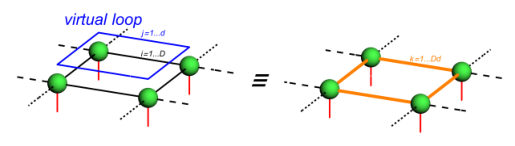
<figcaption class="paper-figure-caption"><b>Fig 1.</b> FIG. 1: Virtual entanglement loop. — On the left, a four- tensor plaquette embedded in a larger tensor network (TN) via the dashed indices. The tensors are contracted along bond indices (black) of bond dimension D. In addition, an index loop carries a virtual index j (blue) that is decoupled from any physical index (red). The TN state can be written as a sum over j = 1 . . . d, |TN⟩= Pd j=1 |ψj⟩, where all quantum states |ψj⟩are identical and proportional to the TN state. On the right, the same plaquette after merging the indices i and j into a single index k = 1 . . . Dd (orange). The resulting bond dimension is larger by a factor of d than required to represent the TN state. Any single...</figcaption>
</figure>
<figure class="paper-figure-card">

<figcaption class="paper-figure-caption"><b>Fig 2.</b> FIG. 2: Bond zero modes. — In (a), the gray semi-ellipse denotes a tensor network (TN) state |ψ⟩. The red lines cor- respond to physical indices. All internal bond indices are implicit, except for an explicit summation over the index j, indicated by the blue line. In (b), this bond index line is cut to define the states |ψij⟩. In (c), the overlaps between these states and their conjugates define the metric tensor in (2). In (d), the singular value decomposition (6) is absorbed into the TN, yielding the new states defined in (8).</figcaption>
</figure>
<figure class="paper-figure-card">
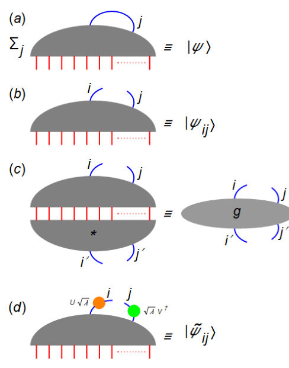
<figcaption class="paper-figure-caption"><b>Fig 3.</b> Figure 2(a) shows a tensor network with an explicit summation over one of its bond indices. The TN can be written as</figcaption>
</figure>
<figure class="paper-figure-card">
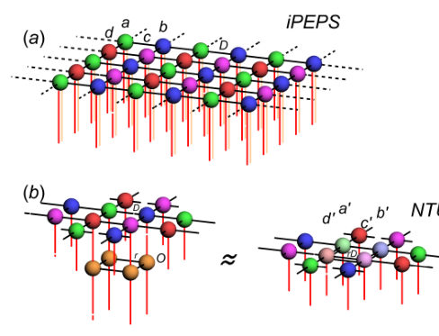
<figcaption class="paper-figure-caption"><b>Fig 4.</b> FIG. 3: NTU for gauge field. In (a), we depict the infi- nite PEPS (iPEPS) tensor-network ansatz, consisting of four sublattice tensors, a, b, c, d. All bond indices have dimension D, while the red (orange) lines represent spin (ancilla) indices. In (b), left, the plaquette evolution operator (26), expressed as a matrix-product operator (MPO) (27), is applied to the abcd plaquette of iPEPS tensors. The MPO bond dimension is r = 2. For clarity, the ancilla indices are omitted. In (b), right, the bond a′ −b′ is first truncated to dimension D us- ing zero-mode truncation. Subsequently, the tensors a′ and b′ are variationally optimized to minimize the difference be- tween the target network...</figcaption>
</figure>
<figure class="paper-figure-card">
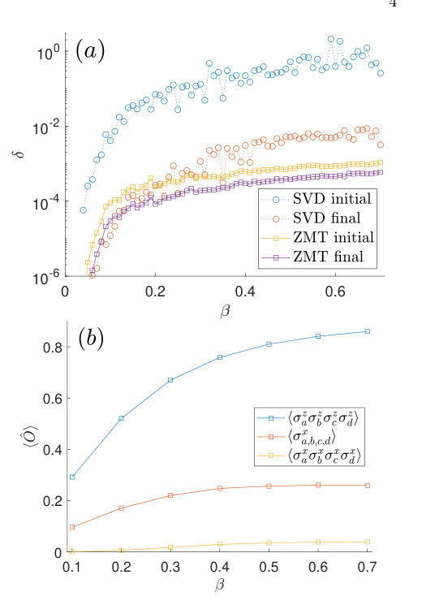
<figcaption class="paper-figure-caption"><b>Fig 5.</b> FIG. 4: Gauge field - errors and observables. In (a), we present the average truncation error δ, as defined in Fig. 3(b), as a function of the inverse temperature β. The data are shown immediately after the zero-mode truncation (ZMT initial) and after the subsequent optimization (ZMT final). For comparison, the same panel also includes results obtained with the simple SVD truncation, shown both im- mediately after truncation (SVD initial) and after the subse- quent optimization (SVD final). Panel (b) displays selected nontrivial observables as a function of β. Here D = 10, κ = 5, χ = 40, dβ = 0.01, and g = 3.04438. A real tensor-network algorithm is employed, with Emax taken as the real...</figcaption>
</figure>
</div>

<p><strong>Summary.</strong> This paper introduces a new numerical method called Zero-Mode Truncation to more efficiently compress loopy tensor networks by identifying redundant information in virtual loops. By exploiting the zero modes of the metric tensor, the method significantly reduces truncation errors in iPEPS simulations of $Z_2$ lattice gauge theory without requiring explicit gauge fixing.</p>
<p><strong>Why it may be interesting.</strong> not directly relevant</p>
<details>
<summary>Detailed structure</summary>
<p><strong>Main problem.</strong> Loopy tensor networks like iPEPS suffer from inefficient bond dimension optimization because local procedures fail to capture correlations circulating along virtual entanglement loops, leading to redundant information and bond dimension inflation.</p>
<p><strong>Main result.</strong> The Zero-Mode Truncation (ZMT) method effectively identifies and eliminates approximate linear dependencies in tensor networks, achieving a truncation error approximately one order of magnitude smaller than standard SVD truncation while remaining gauge invariant.</p>
<p><strong>Method.</strong> A two-step algorithm that identifies the lowest eigenmodes of the states' metric tensor and uses a variational optimization of coefficients via a conjugate gradient method to truncate the bond dimension.</p>
<p><strong>Model / system.</strong> The $Z_2$ lattice gauge theory on an infinite square lattice at finite temperature, represented via the purification of the thermal Gibbs state using an infinite projected entangled-pair state (iPEPS).</p>
<p><strong>Key observables.</strong> Truncation error (Frobenius norm of the difference between target and truncated networks) and nontrivial physical observables related to the $Z_2$ gauge theory.</p>
<p><strong>Important parameters / regimes.</strong> Bond dimension $D$, reduced parameter set $\kappa$, ancilla dimension $\chi$, coupling $g$, and inverse temperature $eta$.</p>
<p><strong>Assumptions / limitations.</strong> The algorithm assumes the existence of (near-)zero modes to facilitate truncation and assumes the neglect of the possibility of being trapped in a local minimum for a given gauge.</p>
<p><strong>Figures summary.</strong> Figure 1 illustrates virtual entanglement loops; Figure 2 details the ZMT process from bond cutting to final truncated state; Figure 3 shows the iPEPS ansatz and evolution sequence; Figure 4 compares ZMT and SVD truncation errors and shows physical observables vs. temperature.</p>
<p><strong>Paper structure.</strong> The paper introduces the problem of loop-induced inefficiency, presents the Zero-Mode Truncation algorithm and its mathematical derivation, demonstrates its gauge invariance, applies it to $Z_2$ lattice gauge theory, and compares its performance against standard SVD methods.</p>
</details>
<details>
<summary>Abstract</summary>
<p>Loopy tensor networks exhibit internal correlations that often render their compression inefficient. We show that even local bond optimization can more effectively exploit locally available information about relevant loop correlations. By cutting a bond, we define a set of states whose linear dependence can be identified through a zero mode of the states' metric tensor and used to truncate the bond dimension. In the absence of an exact zero mode, a linear combination of a small number of the lowest modes can instead be optimized to provide the optimal approximation to a zero mode. The truncation does not require prior gauge fixing. The method is applied to the two-dimensional finite-temperature $Z_2$ lattice gauge theory, whose thermal-state purification is represented by an infinite projected entangled-pair state (iPEPS).</p>
</details>
<p><sub><a href="#top">↑ back to top</a></sub></p>

<p><a id="paper-2605.09914"></a></p>
<h3 id="two-phonon-resonance-drives-multicomponent-mechanical-cat-states"><a href="http://arxiv.org/abs/2605.09914v1">Two-Phonon Resonance Drives Multicomponent Mechanical Cat States</a></h3>
<p><strong>Authors:</strong> Nuo Wang, Haoyang Zhang, Yu Tian, Yadi Niu, Ying Gu<br>
<strong>Type:</strong> theory · <strong>Category:</strong> quantum information and computing · <strong>PDF:</strong> <a href="https://arxiv.org/pdf/2605.09914v1">https://arxiv.org/pdf/2605.09914v1</a><br>
<strong>Analysis basis:</strong> abstract only; PDF text extraction failed or PDF unavailable
<strong>Topic relevance:</strong> <code>correlated / nonlocal dissipation</code> <strong>2/5</strong></p>
<p><strong>Summary.</strong> The paper presents a method to generate high-purity multicomponent mechanical cat states using only linear optomechanical coupling. By leveraging a two-phonon resonance in a multimode system, the researchers demonstrate a way to create complex quantum states that are immune to common decoherence sources. This approach offers a scalable strategy for enhancing nonlinearities in optomechanical platforms.</p>
<p><strong>Why it may be interesting.</strong> It provides a universal strategy for enhancing high-order phonon nonlinearities and engineering non-classical states that are robust against mechanical and optical losses, which is highly relevant for quantum precision measurement and fault-tolerant quantum computing.</p>
<details>
<summary>Detailed structure</summary>
<p><strong>Main problem.</strong> The difficulty of preparing high-purity mechanical cat states using quadratic optomechanical coupling due to its extremely weak strength compared to linear coupling.</p>
<p><strong>Main result.</strong> The achievement of deterministic generation of high-purity multicomponent mechanical cat states using only linear coupling in a multimode system via a resonant two-phonon process.</p>
<p><strong>Method.</strong> Utilizing a two-phonon resonance condition in a multimode system where the annihilation of a high-frequency photon and creation of a low-frequency photon is coupled to the creation of two phonons, mediated by an auxiliary supermode.</p>
<p><strong>Model / system.</strong> A multimode optomechanical system featuring linear coupling between optical supermodes and mechanical modes, specifically operating under a two-phonon resonance condition.</p>
<p><strong>Key observables.</strong> Purity of the mechanical cat states and the effectiveness of the multicomponent generation.</p>
<p><strong>Important parameters / regimes.</strong> Two-phonon resonance condition, linear optomechanical coupling strength, and the presence of an auxiliary supermode.</p>
<p><strong>Assumptions / limitations.</strong> The system relies on the existence of specific optical supermodes that satisfy the resonance condition.</p>
<p><strong>Paper structure.</strong> The paper introduces the limitation of quadratic coupling, proposes a linear-coupling-based resonant two-phonon mechanism, describes the generation of multicomponent cat states, and discusses the implications for quantum engineering and fault tolerance.</p>
</details>
<details>
<summary>Abstract</summary>
<p>Using quadratic optomechanical coupling to prepare high-purity mechanical cat states is not feasible as its strength is several orders weaker than linear optomechanical coupling. Here, using only linear coupling in a multimode system, we achieve strong interaction between photons and two phonons, enabling the deterministic generation of high-purity multicomponent mechanical cats. Mediated by an auxiliary supermode, when other two optical supermodes satisfy the two-phonon resonance condition, the process whereby the annihilation of a high-frequency photon accompanied by the creation of a low-frequency photon and two phonons is strongly enhanced. Such resonant two-phonon process drives multiple rotations and interferences of mechanical coherent states, deterministically generating a multicomponent mechanical cat immune to both mechanical and optical losses. Our work provides an universal strategy for enhancing high-order phonon nonlinearities, paving the way for quantum state engineering, quantum precision measurement and fault-tolerant quantum computation.</p>
</details>
<p><sub><a href="#top">↑ back to top</a></sub></p>

<p><a id="paper-2605.09510"></a></p>
<h3 id="boundary-dependent-topological-degeneracy-in-an-ising-chain"><a href="http://arxiv.org/abs/2605.09510v1">Boundary-dependent topological degeneracy in an Ising chain</a></h3>
<p><strong>Authors:</strong> E. S. Ma, Z. Song<br>
<strong>Type:</strong> theory · <strong>Category:</strong> strongly correlated electrons · <strong>PDF:</strong> <a href="https://arxiv.org/pdf/2605.09510v1">https://arxiv.org/pdf/2605.09510v1</a><br>
<strong>Analysis basis:</strong> abstract only; PDF text extraction failed or PDF unavailable
<strong>Topic relevance:</strong> <code>entanglement &amp; information structure</code> <strong>1/5</strong></p>
<p><strong>Summary.</strong> This paper shows that changing boundary conditions in an Ising chain can fundamentally alter its topological phase diagram. By mapping the system to Kitaev chains, the authors reveal how the existence of topological degeneracy depends on the specific treatment of boundary sites. This provides new insights into the role of boundaries in quantum spin chains.</p>
<p><strong>Why it may be interesting.</strong> not directly relevant</p>
<details>
<summary>Detailed structure</summary>
<p><strong>Main problem.</strong> The study investigates how specific alternative open boundary conditions affect the topological degeneracy and the phase diagram of an Ising chain in a transverse field at non-zero temperatures.</p>
<p><strong>Main result.</strong> The authors demonstrate that a specific boundary condition—which removes both end-site coupling and the transverse field—causes a switch in the existence of topological Kramers-like degeneracy by mapping the system to two independent Kitaev chains.</p>
<p><strong>Method.</strong> The work employs a Majorana representation to analyze the mechanism and uses numerical simulations on finite-size systems to demonstrate bulk-boundary correspondence.</p>
<p><strong>Model / system.</strong> An Ising chain with a transverse field under an alternative type of open boundary condition that eliminates the transverse field and coupling on the end sites.</p>
<p><strong>Key observables.</strong> Topological Kramers-like degeneracy and the winding number in an SSH chain representation.</p>
<p><strong>Important parameters / regimes.</strong> Non-zero temperature and boundary condition types.</p>
<p><strong>Assumptions / limitations.</strong> The system can be exactly mapped onto two independent Kitaev chains under the specified boundary conditions.</p>
<p><strong>Paper structure.</strong> The paper introduces the problem of boundary-dependent degeneracy, presents the mapping to Kitaev chains, analyzes the mechanism via Majorana representation and SSH winding numbers, and validates findings with numerical simulations.</p>
</details>
<details>
<summary>Abstract</summary>
<p>The topological degeneracy is a characteristic of quantum phase diagram in an Ising chain with transverse field. We revisit the phase diagram at nonzero temperature of an Ising chain with two types of open boundary conditions. In this work, we focus on an alternative boundary condition that not only removes the coupling between the two end sites but also eliminates the transverse field on them. We show that such a system can be exactly mapped onto two independent Kitaev chains, where spinless fermions correspond to domain-wall excitations. This results in a switch in the existence of the topological Kramers-like degeneracy in the phase diagram. The underlying mechanism is analyzed within the Majorana representation, which indicates that such a switch arises from the gauge dependence of the winding number in an SSH chain. The manifestation of bulk-boundary correspondence at nonzero temperature is demonstrated by numerical simulations on finite-size systems. This finding provides insight into the quantum spin chain.</p>
</details>
<p><sub><a href="#top">↑ back to top</a></sub></p>

<p><a id="paper-2605.10710"></a></p>
<h3 id="communication-efficient-distributed-inverse-quantum-fourier-transform"><a href="http://arxiv.org/abs/2605.10710v1">Communication-Efficient Distributed Inverse Quantum Fourier Transform</a></h3>
<p><strong>Authors:</strong> F. Javier Cardama, Jorge Vázquez-Pérez, Tomás F. Pena, Andrés Gómez<br>
<strong>Type:</strong> theory · <strong>Category:</strong> quantum information and computing · <strong>PDF:</strong> <a href="https://arxiv.org/pdf/2605.10710v1">https://arxiv.org/pdf/2605.10710v1</a><br>
<strong>Analysis basis:</strong> abstract only; PDF text extraction failed or PDF unavailable
<strong>Topic relevance:</strong> <code>entanglement &amp; information structure</code> <strong>1/5</strong></p>
<p><strong>Summary.</strong> The paper proposes a way to perform the Inverse Quantum Fourier Transform across multiple quantum processors more efficiently. By pruning unimportant remote gates, the authors reduce the communication cost from quadratic to linear scaling. This makes large-scale distributed quantum computing much more practical.</p>
<p><strong>Why it may be interesting.</strong> not directly relevant</p>
<details>
<summary>Detailed structure</summary>
<p><strong>Main problem.</strong> The high communication overhead caused by non-local quantum operations in distributed quantum computing architectures.</p>
<p><strong>Main result.</strong> A communication-efficient distributed iQFT that reduces global communication complexity from quadratic O(P^2) to linear O(P) by using a pruning strategy.</p>
<p><strong>Method.</strong> A threshold-driven pruning strategy called a 'communication horizon' that omits remote controlled-phase rotations with negligible impact.</p>
<p><strong>Model / system.</strong> A distributed quantum computing architecture consisting of P nodes, where each node hosts Q qubits, forming a global logical register of size n = P * Q.</p>
<p><strong>Key observables.</strong> Quantum communication complexity and entanglement resource consumption per node.</p>
<p><strong>Important parameters / regimes.</strong> Number of nodes (P), qubits per node (Q), and the communication horizon threshold.</p>
<p><strong>Assumptions / limitations.</strong> The significance of controlled-phase rotations decreases exponentially with distance, allowing for safe pruning.</p>
<p><strong>Paper structure.</strong> The paper introduces the problem of scalability in DQC, proposes a distributed iQFT formulation, introduces the communication horizon pruning method, and analyzes the resulting change in scaling complexity.</p>
</details>
<details>
<summary>Abstract</summary>
<p>The scalability of quantum computing is currently limited by physical, technological, and architectural constraints that hinder the integration of a large number of qubits within a single quantum processor. Distributed quantum computing (DQC) has therefore emerged as a viable alternative, aiming to interconnect multiple smaller quantum processing units (QPUs) to jointly operate on a global quantum state. While this paradigm enables scalable architectures, it introduces significant communication overhead due to the cost of non-local quantum operations across distant nodes. In this work we propose a distributed formulation of the iQFT over a quantum network composed of $P$ nodes, each hosting $Q$ qubits, enabling the execution on a logical register of size $n = P \cdot Q$. Furthermore, we introduce a communication-efficient variant based on a threshold-driven pruning strategy, referred to as a \emph{communication horizon}, which exploits the exponentially decreasing significance of controlled-phase rotations to safely omit remote gates with negligible impact. By reducing the number of inter-node quantum interactions, the proposed approach significantly lowers the quantum communication requirements of the distributed iQFT while preserving its functional correctness. Crucially, we show that this approach fundamentally alters the scaling of the algorithm: the entanglement resource consumption per node saturates to a constant value, reducing the global communication complexity from quadratic $\mathcal{O}(P^2)$ to linear $\mathcal{O}(P)$. As the iQFT constitutes a critical building block in many quantum algorithms, the techniques presented in this paper directly contribute to improving the practicality and scalability of distributed quantum computation.</p>
</details>
<p><sub><a href="#top">↑ back to top</a></sub></p>

<p><a id="paper-2605.10746"></a></p>
<h3 id="lyapunov-exponents-as-duality-invariant-signatures-of-critical-states"><a href="http://arxiv.org/abs/2605.10746v1">Lyapunov Exponents as Duality-Invariant Signatures of Critical States</a></h3>
<p><strong>Authors:</strong> Tong Liu, Gao Xianlong<br>
<strong>Type:</strong> theory · <strong>Category:</strong> disordered systems and neural networks · <strong>PDF:</strong> <a href="https://arxiv.org/pdf/2605.10746v1">https://arxiv.org/pdf/2605.10746v1</a><br>
<strong>Analysis basis:</strong> abstract only; PDF text extraction failed or PDF unavailable
<strong>Topic relevance:</strong> <code>Kondo &amp; dissipative impurity</code> <strong>1/5</strong></p>
<p><strong>Summary.</strong> This paper proposes a new way to identify critical states in disordered systems by looking at the absence of localization in both real and momentum space simultaneously. It transforms a previously phenomenological criterion into a rigorous mathematical principle that can exactly predict critical boundaries in complex models. This provides a powerful new tool for locating phase transitions in quasiperiodic and non-Hermitian systems.</p>
<p><strong>Why it may be interesting.</strong> not directly relevant</p>
<details>
<summary>Detailed structure</summary>
<p><strong>Main problem.</strong> The paper seeks to redefine the identification of critical states in disordered or quasiperiodic systems by moving beyond single-basis wave-function geometry.</p>
<p><strong>Main result.</strong> The authors prove a Fourier exclusion principle where criticality is defined by the simultaneous absence of exponential localization in both real and momentum space, providing an exact solvability principle for locating critical sets.</p>
<p><strong>Method.</strong> The authors utilize Lyapunov exponents and a dual-space formulation to establish a rigorous length-scale statement for criticality, applying it to analytically tractable quasiperiodic models.</p>
<p><strong>Model / system.</strong> The study focuses on quasiperiodic models and non-Hermitian non-self-dual systems where transfer matrix methods can be applied.</p>
<p><strong>Key observables.</strong> Lyapunov exponents in real and momentum space (gamma_x and gamma_m), participation ratios, and multifractal spectra.</p>
<p><strong>Important parameters / regimes.</strong> Energy (E), real-space localization length, and momentum-space localization length.</p>
<p><strong>Assumptions / limitations.</strong> The criterion assumes the applicability of the transfer matrix formalism and bounded local gauge transformations.</p>
<p><strong>Paper structure.</strong> The paper introduces a dual-space Lyapunov property, proves the Fourier exclusion principle, validates the Liu-Xia condition as a rigorous length-scale statement, and demonstrates its predictive power in quasiperiodic and non-Hermitian models.</p>
</details>
<details>
<summary>Abstract</summary>
<p>Critical eigenstates are usually identified through wave-function geometry in a chosen basis, such as participation ratios, multifractal spectra, or finite-size scaling. Here we formulate criticality instead as a dual-space Lyapunov property. We prove a Fourier exclusion principle: exponential localization in one representation is incompatible with exponential localization in its Fourier-dual representation. This turns the Liu--Xia condition, \(γ_x(E)=γ_m(E)=0\), from a phenomenological criterion into a rigorous length-scale statement: a critical state is characterized by the simultaneous absence of exponential confinement in real and momentum space. The criterion is invariant under bounded local gauge transformations of the transfer matrix and remains compatible with conventional single-space multifractal diagnostics. More importantly, it is exactly predictive. In analytically tractable quasiperiodic models, the same condition yields closed-form critical lines, an exact finite critical region with an additional critical branch, and a complex critical surface in a non-Hermitian non-self-dual spectrum. Thus the Liu--Xia condition provides not only a diagnostic of critical states, but an exact solvability principle for locating critical sets across distinct microscopic structures.</p>
</details>
<p><sub><a href="#top">↑ back to top</a></sub></p>
<h2 id="other-papers-58">Other papers (58)</h2>
<p><em>Papers from primary archives without highlighted authors or any topic match. Click to expand.</em></p>
<details>
<summary>Show other papers</summary>

<p><a id="paper-2605.08792"></a></p>
<h3 id="a-controlled-study-of-memory-hierarchy-transitions-in-quantum-circuit-simulation-on-apple-m4-pro-unified-memory-architecture"><a href="http://arxiv.org/abs/2605.08792v1">A Controlled Study of Memory Hierarchy Transitions in Quantum Circuit Simulation on Apple M4 Pro Unified Memory Architecture</a></h3>
<p><strong>Authors:</strong> Gyan Pratipat<br>
<strong>Type:</strong> experiment · <strong>Category:</strong> numerical methods · <strong>PDF:</strong> <a href="https://arxiv.org/pdf/2605.08792v1">https://arxiv.org/pdf/2605.08792v1</a><br>
<strong>Analysis basis:</strong> abstract only; PDF text extraction failed or PDF unavailable</p>
<p><strong>Summary.</strong> This paper investigates how memory architecture affects the performance of quantum circuit simulators on modern unified memory hardware. It reveals that traditional bandwidth metrics fail to predict simulation speedup due to irregular memory access patterns and identifies a significant performance drop when transitioning from 28 to 29 qubits. These findings provide a framework for optimizing quantum simulation workloads on next-generation hardware.</p>
<p><strong>Why it may be interesting.</strong> not directly relevant</p>
<details>
<summary>Detailed structure</summary>
<p><strong>Main problem.</strong> Characterizing the interaction between memory hierarchy, access patterns, and hardware parallelism in state-vector quantum circuit simulation.</p>
<p><strong>Main result.</strong> Identified a 4.46x timing discontinuity at the 28 to 29 qubit transition and demonstrated that GPU speedup for non-contiguous memory access exceeds predictions based on peak streaming bandwidth.</p>
<p><strong>Method.</strong> A thermally isolated, multi-trial performance analysis using 11 simulation backends on Apple M4 Pro Unified Memory Architecture, employing Roofline analysis and STREAM bandwidth benchmarks.</p>
<p><strong>Model / system.</strong> State-vector quantum circuit simulations of GHZ and QFT circuits ranging from 3 to 30 qubits, executed on Apple M4 Pro hardware.</p>
<p><strong>Key observables.</strong> Arithmetic intensity (FLOP/byte), simulation timing, STREAM bandwidth, and GPU speedup factors.</p>
<p><strong>Important parameters / regimes.</strong> Qubit count (3-30), memory bandwidth (224 GB/s), and memory access patterns (tensordot, flat-index, and direct-index).</p>
<p><strong>Assumptions / limitations.</strong> The study assumes the Apple M4 Pro Unified Memory Architecture allows for the elimination of memory-technology and interconnect confounds between CPU and GPU.</p>
<p><strong>Paper structure.</strong> The paper presents a hardware-characterization framework, beginning with a Roofline analysis of arithmetic intensity, followed by an investigation of timing discontinuities during qubit scaling, and concluding with a comparison of GPU speedup against predicted streaming bandwidth.</p>
</details>
<details>
<summary>Abstract</summary>
<p>State-vector quantum circuit simulation is memory-bandwidth bound, yet the interaction between memory hierarchy, access pattern, and hardware parallelism remains incompletely characterized. We address this using the Apple M4 Pro Unified Memory Architecture (UMA), where CPU and GPU share identical physical LPDDR5X DRAM ($\sim$224 GB/s STREAM bandwidth for both), eliminating memory-technology and interconnect confounds. Using a thermally isolated, multi-trial methodology across 11 simulation backends on GHZ and QFT circuits from 3 to 30 qubits, we make three central contributions. First, a Roofline analysis confirms all gate implementations have arithmetic intensity $\leq$0.38 FLOP/byte, well below the ridge point for any plausible peak compute on modern hardware, establishing structural memory-boundedness. Second, we identify a reproducible 4.46$\times$ timing discontinuity at the 28$\rightarrow$29 qubit transition, confirmed under thermally isolated conditions and cross-validated across GHZ and QFT circuits; tensordot backends exhibit the full discontinuity while direct-index backends maintain $\sim$2$\times$ per-qubit scaling throughout. Third, despite STREAM predicting only 1.85$\times$ GPU speedup (MLX CPU 119.9 GB/s vs. MLX GPU 221.9 GB/s), all three algorithm classes exceed this prediction: tensordot 3.1--4.1$\times$, flat-index 3.5--5.9$\times$, and direct-index 6--10$\times$, demonstrating that peak streaming bandwidth does not predict simulation speedup for non-contiguous memory access patterns, with the gap widening as access irregularity increases. These findings provide a hardware-characterization framework for quantum simulation workloads on UMA.</p>
</details>
<p><sub><a href="#top">↑ back to top</a></sub></p>

<p><a id="paper-2605.10650"></a></p>
<h3 id="a-random-matrix-criterion-for-initializing-gated-recurrent-neural-networks"><a href="http://arxiv.org/abs/2605.10650v1">A Random-Matrix Criterion for Initializing Gated Recurrent Neural Networks</a></h3>
<p><strong>Authors:</strong> Tommaso Fioratti, Riccardo Marcaccioli, Francesco Casola<br>
<strong>Type:</strong> theory · <strong>Category:</strong> disordered systems and neural networks · <strong>PDF:</strong> <a href="https://arxiv.org/pdf/2605.10650v1">https://arxiv.org/pdf/2605.10650v1</a><br>
<strong>Analysis basis:</strong> abstract only; PDF text extraction failed or PDF unavailable</p>
<p><strong>Summary.</strong> The paper provides a mathematical criterion based on random matrix theory to find the optimal initialization for gated recurrent neural networks. By identifying the critical point between ordered and chaotic dynamics, it offers a way to maximize the performance of reservoir computing models. This serves as a new design principle for setting weights in complex recurrent architectures.</p>
<p><strong>Why it may be interesting.</strong> not directly relevant</p>
<details>
<summary>Detailed structure</summary>
<p><strong>Main problem.</strong> Determining the optimal weight initialization for Gated Recurrent Neural Networks (RNNs) to ensure stable and effective dynamics.</p>
<p><strong>Main result.</strong> The derivation of a simple random-matrix criterion to estimate the critical weight variance (gc) that separates ordered and chaotic phases in a broad class of recurrent architectures.</p>
<p><strong>Method.</strong> Application of random matrix theory in the infinite-width limit to identify the phase transition point between ordered and chaotic dynamics.</p>
<p><strong>Model / system.</strong> A broad class of recurrent neural network architectures, specifically focusing on gated-RNN reservoirs used in reservoir computing.</p>
<p><strong>Key observables.</strong> Weight variance (g^2), critical gain (gc), and performance on chaotic forecasting tasks.</p>
<p><strong>Important parameters / regimes.</strong> Weight variance (g^2), infinite-width limit, and the transition between ordered and chaotic phases.</p>
<p><strong>Assumptions / limitations.</strong> The analysis assumes the infinite-width limit of the neural network architectures.</p>
<p><strong>Paper structure.</strong> The paper introduces the importance of initialization in reservoir computing, derives a random-matrix criterion for critical gain, validates this criterion using chaotic forecasting tasks, and proposes it as a design principle for future initialization schemes.</p>
</details>
<details>
<summary>Abstract</summary>
<p>Proper weight initialization prior to training has historically been one of the key factors that helped kick off the deep learning revolution. Initialization is even more crucial in "reservoir computing", where the weights of a readout layer are learned linearly while the reservoir weights are fixed and largely determine the richness, stability and memory of the resulting dynamics. In the infinite-width limit it has been shown that meaningful initializations are those sitting at an effective critical point of the randomly initialized model. The phase transition is controlled by the weight variance $g^2$ and separates an ordered phase from a chaotic one where information progressively degrades. Here we derive a simple criterion to estimate the critical $g_c$ for a broad class of recurrent architectures and we show that it closely tracks the gain at which a gated-RNN reservoir achieves peak performance on a chaotic forecasting task. Finally, we argue that our criterion can serve as a design principle for future initialization schemes.</p>
</details>
<p><sub><a href="#top">↑ back to top</a></sub></p>

<p><a id="paper-2605.09962"></a></p>
<h3 id="attenuation-of-long-wavelength-sound-in-quenched-disordered-media"><a href="http://arxiv.org/abs/2605.09962v1">Attenuation of long-wavelength sound in quenched disordered media</a></h3>
<p><strong>Authors:</strong> Bingyu Cui, Yuqi Wang<br>
<strong>Type:</strong> both · <strong>Category:</strong> disordered systems and neural networks · <strong>PDF:</strong> <a href="https://arxiv.org/pdf/2605.09962v1">https://arxiv.org/pdf/2605.09962v1</a><br>
<strong>Analysis basis:</strong> full PDF text, analyzed in chunks</p>
<div class="figure-strip-hint">↔ Scroll figures horizontally</div>
<div class="paper-figures-scroll">
<figure class="paper-figure-card">
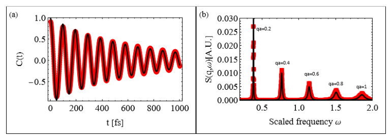
<figcaption class="paper-figure-caption"><b>Fig 1.</b> FIG. 1. Sound attenuation in 1D chains with random springs following an identical independent</figcaption>
</figure>
<figure class="paper-figure-card">

<figcaption class="paper-figure-caption"><b>Fig 2.</b> FIG. 2. The propagation of the sound wave in relaxed 1D chains consisting of 20000 lattice points</figcaption>
</figure>
<figure class="paper-figure-card">
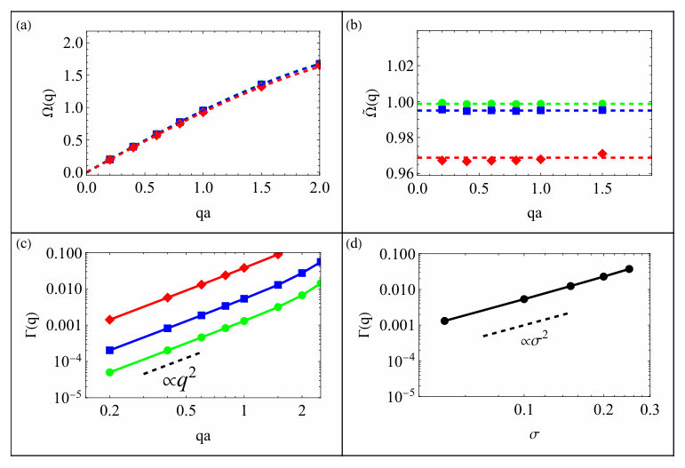
<figcaption class="paper-figure-caption"><b>Fig 3.</b> Figure 3 compares Born predictions Eq. (11) with the simulation data: In the long-</figcaption>
</figure>
<figure class="paper-figure-card">
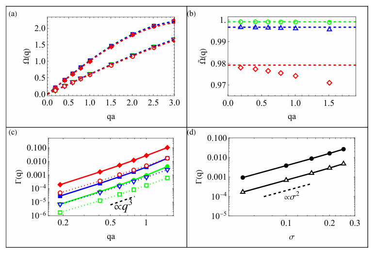
<figcaption class="paper-figure-caption"><b>Fig 4.</b> FIG. 3. The propagation of sound waves in relaxed triangular spring networks consisting of 40000</figcaption>
</figure>
<figure class="paper-figure-card">
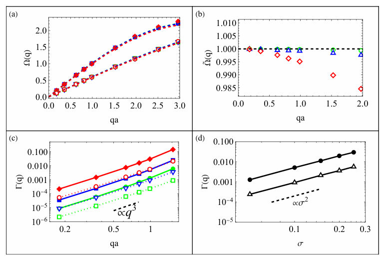
<figcaption class="paper-figure-caption"><b>Fig 5.</b> FIG. 4. The propagation of sound waves in relaxed triangular spring bonds consisting of 40000</figcaption>
</figure>
</div>
<p><strong>Summary.</strong> This paper provides an analytical and numerical study of how different types of quenched disorder affect sound wave propagation. It demonstrates that while both elastic and density fluctuations lead to Rayleigh-type damping, only elastic heterogeneity significantly alters the sound speed in the long-wavelength limit.</p>
<p><strong>Why it may be interesting.</strong> not directly relevant</p>
<details>
<summary>Detailed structure</summary>
<p><strong>Main problem.</strong> The paper investigates the mechanisms behind sound attenuation and dispersion renormalization in quenched disordered media, specifically distinguishing between the effects of elastic and density disorder.</p>
<p><strong>Main result.</strong> The authors find that elastic disorder causes both Rayleigh-type attenuation and sound-speed reduction, whereas density disorder produces Rayleigh-type attenuation without renormalizing the acoustic dispersion to leading order.</p>
<p><strong>Method.</strong> The study uses the Born approximation within a Green's function formalism for theoretical derivations and validates these results using Molecular Dynamics (MD) simulations and normal-mode analyses.</p>
<p><strong>Model / system.</strong> The models include 1D scalar chains, 2D triangular and square lattices, and a continuum description of heterogeneous elastic and mass-disordered media.</p>
<p><strong>Key observables.</strong> Renormalized dispersion relations (sound speed), attenuation/damping rates, and the dynamical structure factor.</p>
<p><strong>Important parameters / regimes.</strong> Long-wavelength limit (low-q), weak-disorder limit (small variance), and spatial dimensionality (d).</p>
<p><strong>Assumptions / limitations.</strong> The analysis assumes weak spatial fluctuations, spatially uncorrelated (white noise) disorder, and the validity of the leading-order Born approximation.</p>
<p><strong>Figures summary.</strong> Figures show velocity autocorrelation functions, dynamical structure factors, dispersion relations vs. wavevector, and damping rates as functions of wavevector and disorder strength across 1D and 2D lattices.</p>
<p><strong>Paper structure.</strong> The paper presents a theoretical derivation of self-energies for elastic and density disorder, followed by numerical validation using MD simulations on 1D and 2D lattices, and concludes with a discussion on the distinction between genuine scattering and excitation artifacts.</p>
</details>
<details>
<summary>Abstract</summary>
<p>We derive analytically, and validate numerically, the dispersion renormalization and attenuation of acoustic waves propagating through quenched disordered media in the long-wavelength limit. We consider weak spatial fluctuations in elastic moduli and/or mass density and compute the disorder-induced self-energies within the leading (Born) approximation. For sufficiently weak disorder, the results depend only on the variances of the fluctuations and are therefore insensitive to the detailed form of the underlying random distribution. For spatially uncorrelated elasticity disorder we obtain Rayleigh-type attenuation, $Γ(q)\propto q^{d+1}$ , together with a reduction of the sound speed. In contrast, density disorder produces Rayleigh-type attenuation but does not renormalize the acoustic dispersion to leading order. Molecular dynamics simulations and normal-mode analyses of disordered one- and two-dimensional lattices quantitatively confirm the theoretical predictions.</p>
</details>
<p><sub><a href="#top">↑ back to top</a></sub></p>

<p><a id="paper-2605.10104"></a></p>
<h3 id="b-h-hysteresis-in-itinerant-feromagnetism-from-chern-simons-gauge-theory"><a href="http://arxiv.org/abs/2605.10104v1">B-H hysteresis in itinerant Feromagnetism from Chern-Simons Gauge theory</a></h3>
<p><strong>Authors:</strong> Kenzo Ishikawa<br>
<strong>Type:</strong> theory · <strong>Category:</strong> strongly correlated electrons · <strong>PDF:</strong> <a href="https://arxiv.org/pdf/2605.10104v1">https://arxiv.org/pdf/2605.10104v1</a><br>
<strong>Analysis basis:</strong> full PDF text, analyzed in chunks</p>
<div class="figure-strip-hint">↔ Scroll figures horizontally</div>
<div class="paper-figures-scroll">
<figure class="paper-figure-card">
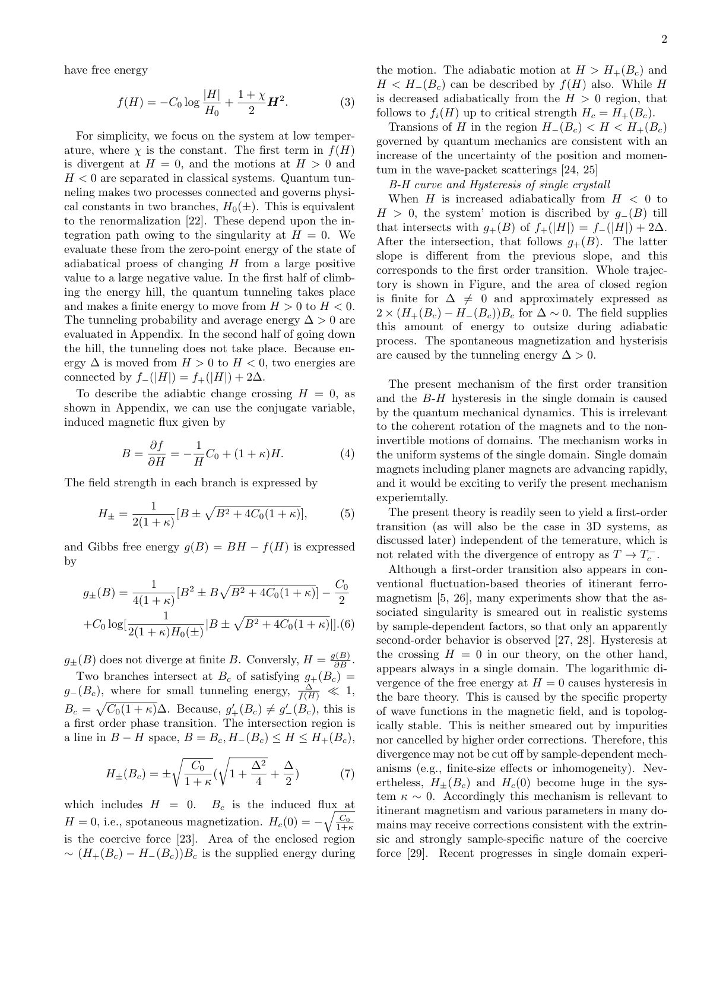
<figcaption class="paper-figure-caption"><b>Fig 1.</b> Low-resolution page preview, page 2</figcaption>
</figure>
<figure class="paper-figure-card">
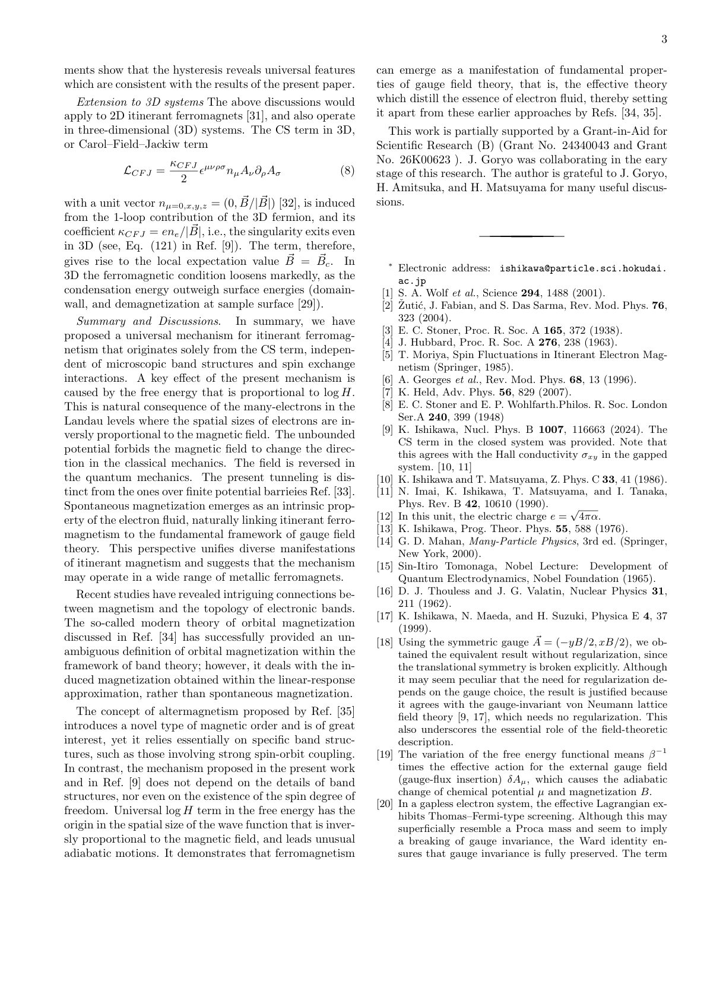
<figcaption class="paper-figure-caption"><b>Fig 2.</b> Low-resolution page preview, page 3</figcaption>
</figure>
<figure class="paper-figure-card">
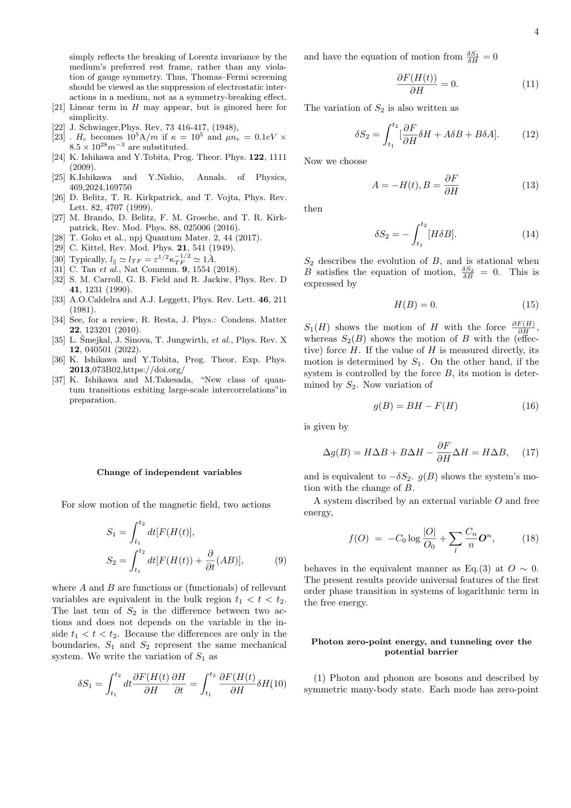
<figcaption class="paper-figure-caption"><b>Fig 3.</b> Low-resolution page preview, page 4</figcaption>
</figure>
<figure class="paper-figure-card">
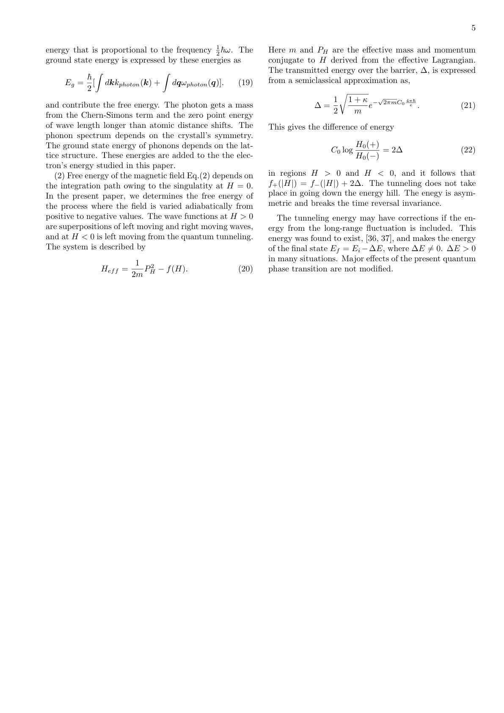
<figcaption class="paper-figure-caption"><b>Fig 4.</b> Low-resolution page preview, page 5</figcaption>
</figure>
</div>
<p><strong>Summary.</strong> This paper proposes that B-H hysteresis in itinerant ferromagnets arises from a fundamental quantum mechanical singularity in the free energy derived from Chern-Simons gauge theory. It demonstrates that a log|H| term leads to a first-order phase transition and that magnetization reversal occurs through quantum tunneling. This provides a universal mechanism for ferromagnetism that is independent of specific microscopic band structures or domain wall dynamics.</p>
<p><strong>Why it may be interesting.</strong> not directly relevant</p>
<details>
<summary>Detailed structure</summary>
<p><strong>Main problem.</strong> The paper seeks to explain the microscopic origin of B-H hysteresis and spontaneous magnetization in single-domain, symmetric itinerant ferromagnets without relying on domain wall motion or specific band structures.</p>
<p><strong>Main result.</strong> The authors derive a log|H| term in the free energy from Chern-Simons gauge theory, which creates a singularity at H=0 that induces a first-order phase transition and hysteresis via quantum tunneling.</p>
<p><strong>Method.</strong> The study employs an effective Lagrangian method and thermodynamic integration within a Chern-Simons gauge theory framework, using a semiclassical approximation to evaluate energy changes during adiabatic field reversal.</p>
<p><strong>Model / system.</strong> The system is an electron fluid in a metallic, single-domain itinerant ferromagnet, modeled using Chern-Simons gauge theory where the free energy includes a logarithmic singularity at zero magnetic field.</p>
<p><strong>Key observables.</strong> B-H hysteresis loop area, spontaneous magnetization (Bc), and coercive force (Hc).</p>
<p><strong>Important parameters / regimes.</strong> The coupling strength (C0), the Chern-Simons related parameter (kappa), and the tunneling energy (Delta).</p>
<p><strong>Assumptions / limitations.</strong> The theory assumes a low-temperature limit (T to 0), an adiabatic change in the magnetic field, and that the spatial size of electrons in Landau levels is inversely proportional to the magnetic field.</p>
<p><strong>Paper structure.</strong> The paper begins by defining the problem of hysteresis in single domains, introduces the Chern-Simons gauge theory framework, derives the logarithmic free energy term, calculates the resulting first-order transition and hysteresis via tunneling, and discusses the universality and potential 3D generalizations of the mechanism.</p>
</details>
<details>
<summary>Abstract</summary>
<p>The log H term is derived in the free energy of many-electron system from Chern-Simons gauge theory. Owing to the singularity at $H=0$, this leads the first order transition and B-H hysteresis to many-electron systems of symmetric and single domain. This has the origin in quantum mechanics and is irrelevant to non-invertible motions of domains. This transition appears in single and symmetric domain.</p>
</details>
<p><sub><a href="#top">↑ back to top</a></sub></p>

<p><a id="paper-2605.10798"></a></p>
<h3 id="berrys-phase-under-topology-change"><a href="http://arxiv.org/abs/2605.10798v1">Berry's phase under topology change</a></h3>
<p><strong>Authors:</strong> Pavel Kurasov, Vladislav Shubin, Axel Tibbling<br>
<strong>Type:</strong> theory · <strong>Category:</strong> other · <strong>PDF:</strong> <a href="https://arxiv.org/pdf/2605.10798v1">https://arxiv.org/pdf/2605.10798v1</a><br>
<strong>Analysis basis:</strong> abstract only; PDF text extraction failed or PDF unavailable</p>
<p><strong>Summary.</strong> This paper explores the relationship between topology change and the geometric Berry's phase. By using Laplacians on metric graphs, it shows that non-trivial Berry's phases can emerge even in systems with real-valued eigenfunctions during topological transitions.</p>
<p><strong>Why it may be interesting.</strong> not directly relevant</p>
<details>
<summary>Detailed structure</summary>
<p><strong>Main problem.</strong> The paper investigates how the geometric Berry's phase behaves when the underlying topological structure of a Hamiltonian changes.</p>
<p><strong>Main result.</strong> The authors demonstrate that Hamiltonians with real-valued eigenfunctions can still possess a non-trivial geometric Berry's phase during topology changes.</p>
<p><strong>Method.</strong> The study uses Laplacians on metric graphs to construct continuous families of Hamiltonians with varying topological structures.</p>
<p><strong>Model / system.</strong> The system consists of Laplacians defined on metric graphs, which serve as a framework for constructing Hamiltonians with different topological properties.</p>
<p><strong>Key observables.</strong> Berry's phase and topological structure.</p>
<p><strong>Paper structure.</strong> The paper constructs continuous families of Hamiltonians using metric graphs, demonstrates the existence of non-trivial Berry's phase in real-valued eigenfunction systems, and discusses the relationship between this phase and topology change.</p>
</details>
<details>
<summary>Abstract</summary>
<p>Laplacians on metric graphs are used to construct continuous families of Hamiltonians with different topological structure. One such family is used to demonstrate that Hamiltonians with real-valued eigenfunctions may possess non-trivial geometric Berry's phase. Connections between non-trivial Berry's phase and topology change are discussed.</p>
</details>
<p><sub><a href="#top">↑ back to top</a></sub></p>

<p><a id="paper-2605.09249"></a></p>
<h3 id="bound-state-spectra-of-a-lifshitz-type-dirac-equation-in-21-dimensions"><a href="http://arxiv.org/abs/2605.09249v1">Bound-State Spectra of a Lifshitz-Type Dirac Equation in (2+1) Dimensions</a></h3>
<p><strong>Authors:</strong> Lucas K. R. Queiroz, Van Sérgio Alves, Nilberto Bezerra, Luis Fernández, Francisco Peña<br>
<strong>Type:</strong> theory · <strong>Category:</strong> strongly correlated electrons · <strong>PDF:</strong> <a href="https://arxiv.org/pdf/2605.09249v1">https://arxiv.org/pdf/2605.09249v1</a><br>
<strong>Analysis basis:</strong> abstract only; PDF text extraction failed or PDF unavailable</p>
<p><strong>Summary.</strong> This paper explores how Lifshitz-type spatial derivatives alter the energy spectra of 2D Dirac particles under different confinement potentials. It provides specific scaling laws that could help describe the low-energy physics of anisotropic 2D materials like bilayer graphene.</p>
<p><strong>Why it may be interesting.</strong> not directly relevant</p>
<details>
<summary>Detailed structure</summary>
<p><strong>Main problem.</strong> The study investigates how Lifshitz-type spatial derivatives with a dynamical exponent z=2 modify the bound-state spectra of a Dirac-type equation in (2+1) dimensions under various radial confinement potentials.</p>
<p><strong>Main result.</strong> The authors derive scaling laws for energy levels, such as E - M proportional to b/R0^2 for hard-wall confinement and E - M proportional to sqrt(2b)w for harmonic potentials, characterizing how higher-order derivatives affect the spectrum.</p>
<p><strong>Method.</strong> Analytical solutions are derived for constant backgrounds, hard-wall, and harmonic potentials, while logarithmic confinement is solved using the Numerov numerical method and semiclassical WKB analysis.</p>
<p><strong>Model / system.</strong> A (2+1)-dimensional Dirac-type equation modified by Lifshitz spatial derivatives (z=2), applicable to materials with quadratic low-energy dispersion like bilayer graphene.</p>
<p><strong>Key observables.</strong> Bound-state energy spectra and scaling laws.</p>
<p><strong>Important parameters / regimes.</strong> Lifshitz parameter b, dynamical exponent z=2, confinement radius R0, harmonic frequency w, and mass M.</p>
<p><strong>Assumptions / limitations.</strong> The study assumes a (2+1)-dimensional framework with specific radial confinement geometries (hard-wall, harmonic, and logarithmic).</p>
<p><strong>Paper structure.</strong> The paper presents an investigation of a modified Dirac equation, providing analytical solutions for specific potentials, numerical results for logarithmic confinement, and a semiclassical analysis of the scaling laws.</p>
</details>
<details>
<summary>Abstract</summary>
<p>We investigate a Dirac-type equation in (2+1) dimensions modified by Lifshitz spatial derivatives with dynamical exponent $z=2$, focusing on the spectral properties of bound states under radial confinement. Analytical solutions are obtained for constant backgrounds, hard-wall confinement, and harmonic potentials, while logarithmic confinement is treated numerically via the Numerov method and complemented by a semiclassical WKB analysis. The resulting spectra exhibit characteristic scaling laws governed by the Lifshitz parameter $b$, including $E - M \propto b/R_0^2$ for hard-wall confinement, $E - M \propto \sqrt{2b}\,ω$ for harmonic trapping, and $E - M \sim α\ln\sqrt{b}$ in the semiclassical regime of logarithmic confinement. These results provide a consistent characterization of how higher-order spatial derivatives modify bound-state spectra in two-dimensional Dirac systems and may be relevant for effective descriptions of materials with quadratic low-energy dispersion, such as bilayer graphene and related anisotropic 2D systems.</p>
</details>
<p><sub><a href="#top">↑ back to top</a></sub></p>

<p><a id="paper-2605.10232"></a></p>
<h3 id="bulk-edge-correspondence-via-higher-gauge-theory"><a href="http://arxiv.org/abs/2605.10232v1">Bulk-Edge Correspondence via Higher Gauge Theory</a></h3>
<p><strong>Authors:</strong> Hisham Sati, Urs Schreiber<br>
<strong>Type:</strong> theory · <strong>Category:</strong> strongly correlated electrons · <strong>PDF:</strong> <a href="https://arxiv.org/pdf/2605.10232v1">https://arxiv.org/pdf/2605.10232v1</a><br>
<strong>Analysis basis:</strong> abstract only; PDF text extraction failed or PDF unavailable</p>
<p><strong>Summary.</strong> This paper provides a high-level mathematical framework for understanding the relationship between the bulk and edge of fractional quantum Hall systems. By using higher gauge theory and M-theory brane constructions, the authors show how the topological properties of the bulk are encoded in the boundary currents. This connects condensed matter topological order to advanced concepts in string theory and supergravity.</p>
<p><strong>Why it may be interesting.</strong> not directly relevant</p>
<details>
<summary>Detailed structure</summary>
<p><strong>Main problem.</strong> The paper seeks to provide a formal mathematical description of the bulk-edge correspondence in fractional quantum Hall (FQH) systems using higher gauge theory.</p>
<p><strong>Main result.</strong> The authors demonstrate that the bulk-edge correspondence for FQH systems can be recast via relative higher gauge theory using the complex Hopf fibration, which reconstructs chiral edge currents and relates the physics to M-theory brane configurations.</p>
<p><strong>Method.</strong> The study employs effective relative higher gauge theory, classifying fibrations, and geometric engineering within 11D supergravity and twisted equivariant differential (TED) Cohomotopy.</p>
<p><strong>Model / system.</strong> The primary physical system is the fractional quantum Hall (FQH) liquid, specifically focusing on the relationship between its bulk topological order and its gapless boundary excitations.</p>
<p><strong>Key observables.</strong> chiral edge currents (Floreanini-Jackiw/Wess-Zumino-Witten type) and W-infinity symmetry</p>
<p><strong>Assumptions / limitations.</strong> The derivation assumes the validity of the geometric engineering framework on M2/M5-branes in 11D supergravity to describe the FQH physics.</p>
<p><strong>Paper structure.</strong> The paper begins by framing the bulk-edge correspondence problem, introduces the higher gauge theory framework using the Hopf fibration, connects the result to M-theory brane configurations in 11D supergravity, and concludes by relating the symmetry structures to FQH collective excitations.</p>
</details>
<details>
<summary>Abstract</summary>
<p>More profound than bulk topological order of quantum materials is only its unwinding via gapless excitations along boundaries of the sample. We recast this bulk-edge correspondence -- for the experimentally relevant case of fractional quantum Hall (FQH) systems -- in terms of effective relative higher gauge theory, controlled by choices of classifying fibrations. For FQH systems, we identify the complex Hopf fibration as classifying the bulk/boundary topological effects, and find that it yields a non-Lagrangian reconstruction of Floreanini-Jackiw/Wess-Zumino-Witten chiral edge currents.   Remarkably, the resulting effective FQH higher gauge theory turns out to be "geometrically engineered" on M2/M5-branes probing A-type orbi-singularities in 11D supergravity, globally completed by flux-quantization in twisted equivariant differential (TED) Cohomotopy: Here the M-string ends of M2-branes on M5-branes engineer the FQH liquid's boundary. This geometric engineering on M-branes might naturally elucidate the curious combination of $W_\infty$-symmetry and of super-symmetry that is known to govern the collective excitations of FQH liquids at long wavelengths.</p>
</details>
<p><sub><a href="#top">↑ back to top</a></sub></p>

<p><a id="paper-2605.10147"></a></p>
<h3 id="cascade-of-fractional-quantum-hall-states-in-2d-system"><a href="http://arxiv.org/abs/2605.10147v1">Cascade of fractional quantum Hall states in 2D system</a></h3>
<p><strong>Authors:</strong> Chen Zhimou, Yan Jiaojie, Zhu Yuxuan, Cui Zhe, Pfeiffer Loren N., West Kenneth W., Baldwin Kirk W., Gupta Adbhut, Liu Yang, Zhu Wei, Luo Wenchen, Wu Ying-Hai, Yuan Shuai, Lin Xi<br>
<strong>Type:</strong> experiment · <strong>Category:</strong> strongly correlated electrons · <strong>PDF:</strong> <a href="https://arxiv.org/pdf/2605.10147v1">https://arxiv.org/pdf/2605.10147v1</a><br>
<strong>Analysis basis:</strong> abstract only; PDF text extraction failed or PDF unavailable</p>
<p><strong>Summary.</strong> The researchers used ultra-low temperatures and high-mobility GaAs/AlGaAs quantum wells to identify new fractional quantum Hall states at filling factors 17/33 and 15/31. By applying composite fermion theory, they provide a systematic framework to understand the hierarchy and relative strengths of these states. This work advances our understanding of topological phases driven by strong electron correlations.</p>
<p><strong>Why it may be interesting.</strong> not directly relevant</p>
<details>
<summary>Detailed structure</summary>
<p><strong>Main problem.</strong> The investigation of new fractional quantum Hall (FQH) states and the systematic mapping of the hierarchy of FQH states in ultra-high-mobility 2D electron gases.</p>
<p><strong>Main result.</strong> Discovery of new longitudinal resistance dips at filling factors 17/3ASS and 15/31, and the proposal of a pattern to account for the experimental appearance of observed fractions in the range 0 &lt; nu &lt; 2.</p>
<p><strong>Method.</strong> Quantum transport measurements performed in nuclear adiabatic demagnetization and dilution refrigerators at temperatures down to 1 mK.</p>
<p><strong>Model / system.</strong> Ultrahigh-quality GaAs/AlGaAs quantum wells with extremely high mobility (up to 3.7*10^7 cm^2/V/s).</p>
<p><strong>Key observables.</strong> Longitudinal resistance dips and variations in FQH states under an in-plane magnetic field.</p>
<p><strong>Important parameters / regimes.</strong> Temperature down to 1 mK, mobility up to 3.7*10^7 cm^2/V/s, and filling factor range 0 &lt; nu &lt; 2.</p>
<p><strong>Assumptions / limitations.</strong> The analysis of the observed states is framed within the composite fermion theory, distinguishing between non-interacting and interacting composite fermions.</p>
<p><strong>Paper structure.</strong> The paper introduces the FQH effect, reports experimental findings on new resistance dips in high-mobility GaAs/AlGaAs, discusses the results using composite fermion theory, and concludes with a proposed pattern for the hierarchy of observed fractions.</p>
</details>
<details>
<summary>Abstract</summary>
<p>The observation of the fractional quantum Hall (FQH) effect in 2D electron gases ushered in investigations of topological phases driven by strong electron correlations. Their remarkable features include fractionalized elementary excitations, gapless boundary states, and non-trivial quantum entanglement patterns. Thanks to persistent efforts in the building of new platforms and making higher-quality samples, a diverse plethora of FQH states have been unveiled in experiments. We report a systematic study of ultrahigh-quality GaAs/AlGaAs quantum wells with mobility up to 3.7*10^7 cm^2/V/s using quantum transport measurements in nuclear adiabatic demagnetization and dilution refrigerators down to 1 mK. In addition to many FQH states that have already been identified in previous work, new longitudinal resistance dips are observed at filling factors 17/33 and 15/31. The application of an in-plane magnetic field causes disparate variations of the FQH states. The theoretical foundation of these states is discussed in the framework of composite fermion theory. While most fractions can be explained as non-interacting composite fermions forming integer quantum Hall states, a few states correspond to FQH states of composite fermions that arise from residual interaction between them. We summarize the observed fractions in the range of 0 &lt; ν &lt; 2 and propose a pattern to account for their experimental appearance that provides an intuitive picture about the relative strengths of different FQH states.</p>
</details>
<p><sub><a href="#top">↑ back to top</a></sub></p>

<p><a id="paper-2605.10473"></a></p>
<h3 id="cavity-enhanced-collective-quantum-processing-with-polarization-encoded-qubits"><a href="http://arxiv.org/abs/2605.10473v1">Cavity-Enhanced Collective Quantum Processing with Polarization-Encoded Qubits</a></h3>
<p><strong>Authors:</strong> Kamil Wereszczyński, Józef Cyran, Adam Brzezowski, Dawid Załużny, Robert Potoniec, Kasper Wiśniowski, Agnieszka Michalczuk<br>
<strong>Type:</strong> theory · <strong>Category:</strong> quantum information and computing · <strong>PDF:</strong> <a href="https://arxiv.org/pdf/2605.10473v1">https://arxiv.org/pdf/2605.10473v1</a><br>
<strong>Analysis basis:</strong> abstract only; PDF text extraction failed or PDF unavailable</p>
<p><strong>Summary.</strong> The paper proposes a new optical architecture for quantum computing where qubits are encoded in the polarization of light circulating within a cavity. By separating the stable cavity modes from the programmable polarization transformations, the authors show that universal quantum gates can be implemented without needing extreme experimental conditions. This approach makes collective quantum processing more accessible using existing solid-state nonlinear technologies.</p>
<p><strong>Why it may be interesting.</strong> It presents a physically plausible platform for cavity-based quantum computing that relaxes the extreme requirements (like sub-hertz stabilization or millisecond lifetimes) typically associated with cavity QED-based quantum information processing.</p>
<details>
<summary>Detailed structure</summary>
<p><strong>Main problem.</strong> Designing a scalable and experimentally feasible architecture for collective quantum processing using cavity-enhanced optical modes.</p>
<p><strong>Main result.</strong> The authors demonstrate that a universal gate set can be achieved using polarization-encoded qubits in recirculating cavity modes, with order-unity conditional phases achievable in centimeter-scale cavities using standard nonlinear media.</p>
<p><strong>Method.</strong> A parameter-scaling analysis of a cavity-enhanced architecture that separates the physical carrier (harmonic cavity bundles) from the computational degree of freedom (polarization subspace).</p>
<p><strong>Model / system.</strong> An optical architecture consisting of recirculating intracavity modes where logical qubits are encoded in the polarization subspace, utilizing polarization-selective nonlinear interactions for entanglement.</p>
<p><strong>Key observables.</strong> Conditional phases (controlled-phase gates) and gate fidelity/attainability.</p>
<p><strong>Important parameters / regimes.</strong> Cavity scale (centimeter-scale), nonlinear coefficients, photon lifetimes, and laser stabilization requirements.</p>
<p><strong>Assumptions / limitations.</strong> The use of experimentally accessible solid-state nonlinear media and the ability to implement programmable polarization transformations.</p>
<p><strong>Paper structure.</strong> The paper introduces the architecture, describes the separation of carrier and computational degrees of freedom, details the implementation of single-qubit and two-qubit gates, and concludes with a parameter-scaling analysis.</p>
</details>
<details>
<summary>Abstract</summary>
<p>We introduce a cavity-enhanced optical architecture for collective quantum processing in which logical qubits are encoded in the polarization subspace of recirculating intracavity modes. The physical carrier and computational degree of freedom are explicitly separated: harmonic cavity bundles provide a stable resonant substrate, while programmable polarization transformations implement single-qubit operations. A polarization-selective nonlinear interaction in the entanglement region generates tunable controlled-phase gates, enabling a universal gate set. A parameter-scaling analysis shows that order-unity conditional phases are attainable in centimeter-scale cavities using experimentally accessible solid-state nonlinear media, without requiring extreme nonlinear coefficients, millisecond photon lifetimes, or sub-hertz laser stabilization. The results indicate that resonant recirculation provides a physically plausible platform for cavity based collective quantum architectures.</p>
</details>
<p><sub><a href="#top">↑ back to top</a></sub></p>

<p><a id="paper-2605.10255"></a></p>
<h3 id="comparing-qubit-and-qudit-encodings-for-ev-charging-and-trip-assignment-problems"><a href="http://arxiv.org/abs/2605.10255v1">Comparing Qubit and Qudit Encodings for EV Charging and Trip Assignment Problems</a></h3>
<p><strong>Authors:</strong> Linus Ekstrøm, Hao Wang, Sebastian Schmitt<br>
<strong>Type:</strong> theory · <strong>Category:</strong> quantum information and computing · <strong>PDF:</strong> <a href="https://arxiv.org/pdf/2605.10255v1">https://arxiv.org/pdf/2605.10255v1</a><br>
<strong>Analysis basis:</strong> abstract only; PDF text extraction failed or PDF unavailable</p>
<p><strong>Summary.</strong> This paper compares qubit and qudit encodings for solving electric vehicle fleet management problems using the QAOA algorithm. It demonstrates that qudit-native encodings can significantly reduce the required quantum resources and simulation time without sacrificing optimization quality. This suggests a practical path for using higher-dimensional quantum states to solve complex integer-based scheduling tasks.</p>
<p><strong>Why it may be interesting.</strong> not directly relevant</p>
<details>
<summary>Detailed structure</summary>
<p><strong>Main problem.</strong> The study investigates how different encoding strategies (qubit-based binary encoding vs. qudit-based integer encoding) affect the resource requirements and optimization performance of variational quantum algorithms for combinatorial optimization.</p>
<p><strong>Main result.</strong> The qudit encoding of customer trips achieves similar or better optimization performance compared to qubit encoding while exponentially reducing the required Hilbert-space dimension and simulation runtime.</p>
<p><strong>Method.</strong> The researchers use the Quantum Approximate Optimization Algorithm (QAOA) applied to a constrained electric vehicle (EV) fleet management problem, comparing binary and integer-based encodings.</p>
<p><strong>Model / system.</strong> The system is a combinatorial optimization model representing an electric vehicle fleet management problem, which includes determining optimal battery charging schedules and assigning EVs to customer trips.</p>
<p><strong>Key observables.</strong> Optimization performance, required Hilbert-space dimension, and simulation runtime.</p>
<p><strong>Important parameters / regimes.</strong> The encoding type (qubit vs. qudit) and the constraints of the EV charging and trip assignment problem.</p>
<p><strong>Assumptions / limitations.</strong> The study assumes that the feasibility of the solution set remains identical between the two encoding methods.</p>
<p><strong>Paper structure.</strong> The paper introduces the problem of variational quantum optimization, defines the EV fleet management problem, compares qubit and qudit encoding methodologies, presents performance evaluations on random instances, and concludes with the implications for multi-valued scheduling problems.</p>
</details>
<details>
<summary>Abstract</summary>
<p>Variational quantum algorithms have attracted attention for their potential to solve combinatorial optimization problems. We study how the choice of encoding affects the resource requirements and optimization behavior of a variational quantum optimization algorithm. In order to quantify these effects, realistically inspired constrained electric vehicle (EV) fleet management problems were considered. These problems couple determining the optimal EV battery charging schedule with assigning EVs to trips requested by customers. We compare a conventional binary (qubit) trip encoding with an integer (qudit) encoding that represents assignments more directly. Both encodings guarantee the same feasible solution set, while the qudit encoding exponentially reduces the required Hilbert-space dimension. We solve many random instances of highly constrained uni- and bi-directional charging problems using qudit-based quantum approximate optimization algorithm (QAOA) and thoroughly evaluate the performance results. We find that the qudit encoding of customer trips achieves similar or better optimization performance at much reduced resource requirements and shorter simulation runtime. These results highlight qudit-native encodings as a practical route for integer and multi-valued scheduling problems in variational quantum optimization.</p>
</details>
<p><sub><a href="#top">↑ back to top</a></sub></p>
<hr>
<p>
<a href="index.html">← Index</a>
 · <a href="papers_05.html">← Previous</a> · <a href="papers_07.html">Next →</a>
</p>
<hr>

</body>
</html>
